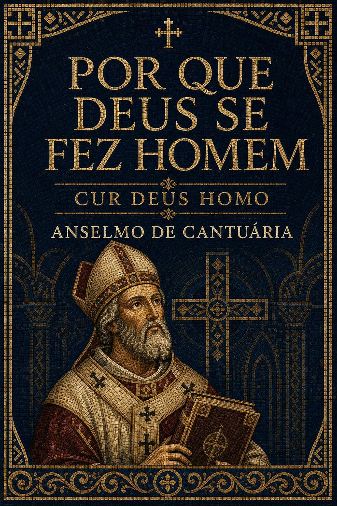
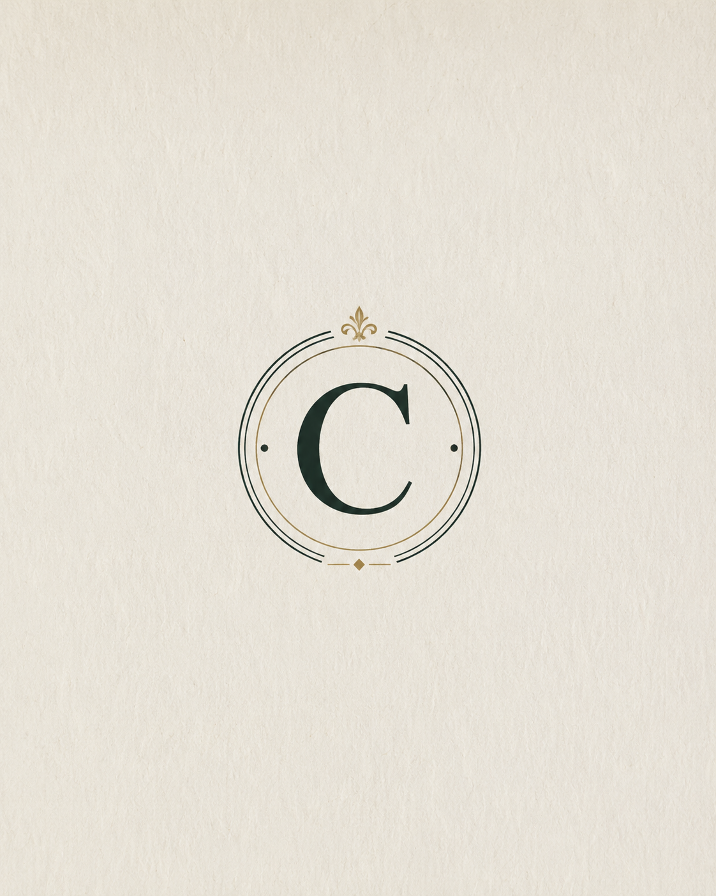

Clássicos pastorais
Consolo, providência, paz e transformação do coração em autores que atravessaram séculos.
CONFESSAI PUBLICAÇÕES
Traduções cuidadosas e recursos bíblicos que aproximam a tradição cristã histórica da vida, da igreja e das perguntas do presente.


“A verdade antiga não precisa parecer distante.”
LINHAS EDITORIAIS
Consolo, providência, paz e transformação do coração em autores que atravessaram séculos.
Textos fundamentais de teologia e filosofia cristã apresentados em português claro e cuidadoso.
Obras contemporâneas sobre tradição, doutrina, seitas, heresias e vida da igreja.
NOSSO CATÁLOGO
Nenhum livro encontrado.
SOBRE A CONFESSAI
A Confessai Publicações recupera clássicos cristãos e produz recursos contemporâneos para leitores que desejam compreender melhor a fé recebida pela igreja.
Nosso trabalho une tradução, revisão e apresentação editorial para tornar obras históricas acessíveis sem diluir sua força.
ACOMPANHE A CONFESSAI
Siga a Confessai no Instagram e acompanhe lançamentos, clássicos e leituras para uma fé viva.